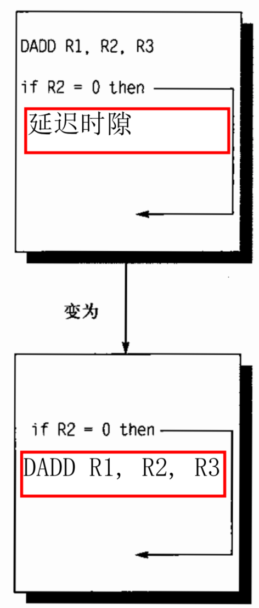

流水线
流水线可以理解为将一个指令拆分成多个步骤，并通过多个硬件单元并行执行来加速执行过程。
RISC五级流水线：
IF指令提取周期：将程序计数器（PC）发送导存储器，从存储器提取当前指令。之后向PC+4
ID指令译码/寄存器提取周期：对指令进行译码，并从寄存器堆中读取与寄存器源说明符相对应的寄存器。指令译码与寄存器的读取是并行执行的。
EX执行/有效地址周期：ALU堆上一周其准备的操作数进行操作
MEM存储器访问周期：如果指令是load指令，则从上一周期计算的有效地址从存储器中读取数据。如果是一条store指令，择使用有效地址将寄存器堆的第二个寄存器读取的数据写入存储器
WB写回周期：寄存器-寄存器 ALU指令或载入指令，将结果写入寄存器堆

其中IM表示指令存储器，DM表示数据存储器。通过这种指令提取与数据存储器访问分离的方式可以避免一些冲突。
上面这张图其实是不完整的，为了确保流水线中的指令不会相互干扰，需要引入流水线寄存器来分离连续流水线，如下图的阴影方块所示，在每个时钟周期的末尾将一个流水级得到的所有结果都存储寄存器中，在一个时钟周期用作下一级的输入。所以更现实考虑流水线的性能时是需要考虑寄存器延迟带来的损耗。

流水线冒险
假如流水线按照最理想的情况执行，流水线的加速比就是流水线深度。但实际运行的情况非常复杂，难免会出现流水线无法并行、出现停顿的情况，我们将这种情况称为冒险(hazard)，按照发生原因可以分为三类冒险：
- 结构冒险：一般指硬件资源的冲突，例如两个不同阶段流水线使用同一硬件资源
- 数据冒险：一条指令需要依赖先前指令的结果，但先前指令还没算出来
- 控制冒险：分支指令及其他可能改变程序计数器的指令可能导致控制冒险
结构冒险
结构冒险一般没什么好的办法，因为是硬件资源的冲突，所以只能通过增加硬件来解决，三个字概况是“得加钱”。在不加钱的情况下， 发生结构冒险时采取引入bubble的方法，即流水线停顿一个周期。bubble这个词非常形象，就像水瓶里的气泡一样占据了水瓶空间但是却没有水，在这里bubble可以理解为，占据了流水线的空间但这个周期不 q工作。
数据冒险
数据冒险可以分为三种情况：
Flow dependence 真数据相关（RAW: Read after Write)
$$
r_3\leftarrow r_1\ op\ r_2\\
r_5\leftarrow r_3\ op\ r_4
$$Anti dependence 反相关（WAR: Write after Read)
$$
r_3\leftarrow r_1\ op\ r_2\\
r_1\leftarrow r_4\ op\ r_5
$$Output dependence 输出相关（WAW: Write after Write)
$$
r_3\leftarrow r_1\ op\ r_2\\
r_5\leftarrow r_3\ op\ r_4\\
r_3\leftarrow r_6\ op\ r_7
$$
可以发现，只有真数据相关是真的依靠前一条指令输出的数据，反相关和输出相关虽然也出现寄存器相同的情况，但并不是依赖前一天寄存器的值，而只是一个名字。例如反相关的第二条指令，如果换成
$$
r_3\leftarrow r_1\ op\ r_2\\
r_6\leftarrow r_4\ op\ r_5
$$
意思其实是和原来的指令是一样的，所以可以通过寄存器重命名的方式来避免反相关和输出相关。
对于真数据相关的情况可以像结构冒险一样，插入bubble来解决数据冒险的办法，但这样的效率是不高的，有一些效率更高的解决办法：
- Data Forwarding / Bypassing。
- Loop Unrolling
- Software Pipeline
Data Forwarding

尽管五级流水线很长需要到最后一个周期才写回数据，但实际上在EX阶段就已经把数值算出来了。如果需要用前一个指令的数值，没有必要等到前一个指令执行完，可以在中间某一个阶段通过转发技术获取数据。核心思想就是抄近路，如上图虚线所示。

Forwarding并不能完全解决RAW停顿的问题，在上面这个示例中，指令1是LD指令需要在第4个时钟周期结束才能从memory里拿到R1的数据，但是在第4个时钟周期开始，DSUB指令ALU就需要R1的数据，这种情况下Forwarding就无能为力了。
Loop Unrolling
对于循环操作来说，可以将循环展开并且交换指令的顺序，从而减少停顿的时间。从下面这个实例进行说明，
for(i = 1000; i > 0 i--)
x[i] = y[i] * s转换成汇编语言：
Loop: L.D F0, 0(R1) ; F0 = array element
MUL.D F4, F0, F2 ; multiply scalar
S.D F4, 0(R2) ; store result
DADDUI R1, R1,# -8 ; decrement address pointer
DADDUI R2, R2,#-8 ; decrement address pointer
BNE R1, R3, Loop ; branch if R1 != R3
NOP假设指令执行的停顿如下：
LD -> any : 1 stall
FPMUL -> any: 5 stalls
FPMUL -> ST : 4 stalls
IntALU -> BR : 1 stall
1 branch delay slot
以上指令执行的情况如下：
| 1 | 2 | 3 | 4 | 5 | 6 | 7 | 8 | 9 | 10 | 11 | 12 |
|---|---|---|---|---|---|---|---|---|---|---|---|
| LD | stall | MUL | stall | stall | stall | stall | SD | DA | DA | BNE | stall |
如果交换指令执行的顺序，
Loop: L.D F0, 0(R1) ; F0 = array element
DADDUI R1, R1,# -8 ; decrement address pointer
MUL.D F4, F0, F2 ; multiply scalar
DADDUI R2, R2,#-8 ; decrement address pointer
BNE R1, R3, Loop ; branch if R1 != R3
S.D F4, 0(R2) ; store result| 1 | 2 | 3 | 4 | 5 | 6 | 7 | 8 | 9 | 10 | 11 | 12 |
|---|---|---|---|---|---|---|---|---|---|---|---|
| LD | DA | MUL | DA | BNE | stall | stall | SD |
通过以上例子可以发现通过交换指令顺序，可以从12周期降到8个周期。
进一步地，我们将循环展开，原先的每4次循环展开为1个大循环：
for(i = 1000; i > 0 i-=4)
x[i] = y[i] * s
x[i - 1] = y[i - 1] * s
x[i - 2] = y[i - 2] * s
x[i - 3] = y[i - 3] * s转换成汇编语言如下：
Loop: L.D F0, 0(R1)
MUL.D F4, F0, F2
S.D F4, 0(R1)
L.D F6, -8(R1)
MUL.D F8, F6, F2
S.D F8, -8(R1)
L.D F10,-16(R1)
MUL.D F12, F10, F2
S.D F12, -16(R1)
L.D F14, -24(R1)
MUL.D F16, F14, F2
S.D F16, -24(R1)
DADDUI R1, R1, #-32
BNE R1,R2, Loop然后交换以上指令的顺序：
Loop: L.D F0, 0(R1)
L.D F6, -8(R1)
L.D F10,-16(R1)
L.D F14, -24(R1)
ADD.D F4, F0, F2
ADD.D F8, F6, F2
ADD.D F12, F10, F2
ADD.D F16, F14, F2
S.D F4, 0(R1)
S.D F8, -8(R1)
DADDUI R1, R1, # -32
S.D F12, 16(R1)
BNE R1,R2, Loop
S.D F16, 8(R1)这时可以惊奇地发现流水线没有任何停顿！只用14个周期可以完成原本的4次循环，原本一个循环只用了3.5个周期。之所以把循环展开再交换指令顺序可以减少流水线停顿，主要是因为循环展开后会有很多数据不相关的指令，可以集中起来处理，从而把数据相关的指令隔离几个周期，从而避免了停顿。
Software Pipeline
Software pipeline则是考虑循环的指令是一个环，可以将所有指令左移几个单元，从而减少停顿。左移之后，对于第一次循环和最后一次循环还是要单独考虑。假设原本的指令如下：
Loop: L.D F0, 0(R1)
ADD.D F4, F0, F2
S.D F4, 0(R1)
DADDUI R1, R1,# -8
BNE R1, R2, Loop我们将循环中所有指令移动一个单元，变成：
Loop: S.D F4, 16(R1)
ADD.D F4, F0, F2
L.D F0, 0(R1)
DADDUI R1, R1,# -8
BNE R1, R2, Loop它还是原来的循环，但没有数据依赖了。用一个图可以概括以上两种代码的执行过程：

分支冒险
由于分支指令在ID阶段可能会修改程序计数器PC，如果选中分支，则PC改为对应值，否则PC+4。所以在分支后续指令提前在分支指令ID阶段取的值可能是不对的。一个最简单的做法是，一旦ID阶段译码检测到是一条分支指令，对该分支后续指令重新取值。下标就是这种最简单想法的一个例子。
| 分支指令 | IF | ID | EX | MEM | WB | |||
|---|---|---|---|---|---|---|---|---|
| 分支后续指令 | IF | IF | ID | EX | MEM | WB | ||
| 分支后续指令+1 | IF | ID | EX | MEM | WB |
这个想法很简单，不会导致程序在分支指令时取指令出错，但效率却非常低。分支后续指令第一个IF周期基本上是一个停顿，要等到分支指令译码后再重新提取，为此需要设计更好的方式：
- 分支预测（branch predict）
- 消除分支（predicated execution）
- 分支延迟槽（branch delay slot)
分支预测：在上表展示的那个“简单的想法”中，无论分支是否选中，我们都将后续指令重新取值。但这是很浪费的，如果后续指令按照分支是命中的这个前提进行取指令，结果刚好分支也命中了，则没有必要再重新取指令了，可以理解为判断题瞎蒙一个答案，万一对了呢。按照预测发生的阶段，可以分为静态分支预测和动态分支预测：
- 静态分支预测：Compile time
- 动态分支预测：Run time
消除分支：if((a == b) && (c > 500) && (d > 1))这个条件语句，我们可以把三个括号每算出一个就判断一下分支，也可以全部算完之后判断一次分支，这样就减少了两次分支，代价是可能会多执行一些不必要的指令。

分支延迟槽的思想是既然在branch指令后的指令存在延迟的风险，那么在编译时在branch指令后插入一条指令。以下图为例，branch分支后续指令可能需要存在延迟，那么把branch前面的那条与分支完全无关的指令放到branch指令后，填充这个延迟时隙。也就是交换这两条的发射顺序，这样分支指令的下下条指令就有时间来根据分支预测情况进行取指。而插入的那条指令本来就一定会执行，不如放在branch可能产生时隙的时候执行。
静态分支预测
静态分支预测的策略有：
- Always not taken：预测全不命中
- Always taken：预测全命中
- BTFN (Backward taken, forward not taken)：分支方向向后（循环）则预测命中，向前预测不命中
- profile-base：根据编译器历史信息判断
- program-base：启发式算法
动态分支预测
动态分支预测的策略有：可以见Onur Mutlu视频
- Last time prediction (single-bit)
- Two-bit counter based prediction
- Two-level prediction (global vs. local)
- Hybrid
- Advanced algorithms (e.g., using perceptrons, geometric history)
最简单的动态分支预测方案是使用分支预测缓冲器或分支历史表。分支预测缓冲器是一个小型存储器，由分支指令地址的低位索引。该存储器包含一个位，表示分支是否最近被执行。这个方案是最简单的缓冲器类型，没有标签，仅用于减少分支延迟，当延迟时间超过计算可能的目标程序计数器的时间时。
使用这样的缓冲器，实际上我们不知道预测是否正确 - 它可能是由另一个具有相同低位地址位的分支放置的。但这并不重要。预测是一种假设为正确的提示，并且开始在预测的方向上进行取指。如果提示最终证明是错误的，预测位将被反转并重新存储。Last time prediction (single-bit)通过上一次分支结果来作为当前分支的依据，但是遇到这种”TNTNTN”交替型的结果就一次都命中不了，于是有人提出了Two-bit counter based prediction使用2位计数器构建了状态机作为预测依据。

以上的方法都是利用当前分支的低位进行历史索引，但很多情况下分支的命中情况很之前的分支存在一定关联。例如：
if (aa==2)
aa=0;
if (bb==2)
bb=0;
if (aa!=bb) {如果第一个分支和第二个分支命中，那么第三个分支一定不命中。所以每个分支的命中可能会和之前执行的分支命中情况存在关联，**Two-level prediction (global vs. local)**通过m位寄存器存储了前m个分支的命中情况，每个分支有0/1两种可能，于是有$2^m$个pattern。每次预测分支时，可以根据过去m个分支的预测情况，找到对应的pattern，再从pattern中根据分支指令低位地址找到n位计数器。为什么叫2-level？因为有两个维度，一个是前几个分支的预测结果（空间上），一个是当前分支地址过去的预测结果（时间上）

Tournament Predictors：使用关联预测器时，每条分支指令的预测都受全局历史的影响。但是，也有一些分支指令，它们与其它分支指令的相关性不高，使用全局历史进行预测效果可能反而不好。思路为：设置两个预测器，一个使用全局历史进行预测，一个使用局部历史进行预测，再设置一个选择器，用来决定具体使用哪个预测器来对当前分支指令进行预测。
总结一下：分支预测就像是考试去蒙选择题，就以蒙数学高考第12题为例（因为这件事做得比较多，作为例子非常亲切）。single-bit就是看第12题去年高考答案是什么，我这次就蒙什么，上次答案是C，说明老师喜欢在12题设置选项C作为答案，那我就这次也选C。2-bit就是考虑不能只看去年高考，要看近两年高考12题的答案选项。Two-level prediction就是想不能只看12题啊，还要看前几题的结果，比如10题和11题都是C，根据多年的经验，不可能连出三个C，那我12题就不选C了，然后再去查历年高考10题和11题全选C的时候，12题选那个答案比较多。Tournament Predictors就是判断一下，我是参考去年高考的答案还是参考10题和11题的答案来预测当前答案。
动态调度流水线
动态调度流水线的核心思想是允许就绪指令（不存在资源冲突、操作数已就绪的指令）越过前面的停顿指令，率先投入运行，即乱序执行。为了支持乱序执行，需要对ID进行改造，因为就绪的指令就是在ID阶段被阻塞的。我们可以将ID阶段分为两个阶段：
- Issue：只做指令译码和资源冲突检测
- Read Operands：等待数据冲突消除，然后读操作数
计分板算法
计分板算法将每条指令的执行分为四个阶段：
- Issue：这个阶段检测是否有资源冲突，如果没资源冲突就可以发射了
- Read Operands：发射≠能执行！发射只是说硬件资源有了，但数据不一定有，在这个阶段要检查数据能否拿到。
- Execute：有了硬件资源和数据就可以执行操作
- Write result：执行完≠能写回！由于是乱序执行，可能会发生WAR，即前面的指令还没读寄存器，后面的指令执行完就把寄存器的值覆盖了。所以写回时需要判断目标寄存器是否是前面还未读操作数指令的源寄存器。如果是，则必须等待这些指令读完才能写回。
可以看到上面的阶段描述中有很多“检查”和”判断“的词，要如何”检查“和”判断“呢？则需要定义一些状态：

- Busy指示该硬件单元是否忙
- Op指示该硬件单元正执行什么指令
- Fi表示占用该硬件单元的指令目标寄存器
- Fj表示占用该硬件单元的指令源寄存器1
- Fk表示占用该硬件单元的指令源寄存器2
- Qj如果为空，表示Fj已准备就绪；否则则表示Fj正在被哪个硬件单元占用，例如“Integer”、“ADD”
- Qk如果为空，表示Fk已准备就绪；否则则表示Fk正在被哪个硬件单元占用，例如“Integer”、“ADD”
- Rj、Rk为“yes”或“no“，在发射后指示能否读操作数；在执行完后指示能否写回
这个算法的具体执行看视频或课件会更直观，这里不再展示。
这个算法有一个很聪明的想法，就是先把资源不冲突的都发射出去准备着，然后看谁先拿到全部资源就先执行。
Tomasulo算法
Tomasulo算法也叫寄存器重命名法，具体流程在这不细写了，主要思想是这些寄存器只是一个符号，可以抽象成不冲突的符号放在对应保留站里，取值从保留站中从而获取避免冲突。

消除WAW冲突：两条语句同时写入寄存器R1，分别称之为指令I和指令J，指令I发射时，R1的tag打上X。指令I和指令J之间所有要用到R1的指令都从保留站读取X的值，一旦X计算完成，这些指令都可以执行。指令J发射时，若指令I没执行完，R1的tag打上Y，这时指令J如果已就绪，可以直接执行，执行完可以直接写回，哪怕指令J比指令I先执行完写回也不影响指令I和指令J之间的指令执行，因为这些中间指令只会去向X找数据，而修改Y不会造成影响。而在计分板算法中，指令J一定要等到指令I写回，并且所有中间指令完成取值才能写回，这样就造成了停顿。
例如以下WAW冲突：
$$
r_3\leftarrow r_1\ op\ r_2\\r_5\leftarrow r_3\ op\ r_4\\r_3\leftarrow r_6\ op\ r_7\
$$
可以通过寄存器重命名，从而避免了冲突。修改为：
$$
X\leftarrow r_1\ op\ r_2\
r_5\leftarrow X\ op\ r_4\
Y\leftarrow r_6\ op\ r_7\
r_3\leftarrow Y
$$
消除WAR冲突：在计分板算法中，假设指令I要读寄存器R1，指令I+1要写寄存器R1，由于乱序执行，可能指令I还没有读取寄存器R1（计分板算法中要等所有寄存器的值就绪后才能开始读操作数），指令I+1先完成。在Tomasolu算法中，指令I发射后，可以直接将R1的值取走，放在临时变量s中，这样指令I+1执行完成可以直接写寄存器R1。
例如以下WAR冲突：
$$
r_3\leftarrow r_1\ op\ r_2\
r_1\leftarrow r_4\ op\ r_5\
$$
可以通过寄存器重命名，从而避免了冲突。修改为：
$$
r_3\leftarrow s\ op\ r_2\
r_1\leftarrow r_4\ op\ r_5\
$$
Reorder Buffer
程序运行过程中难免会遇到异常，在顺序执行时程序发生的异常都是精确异常，精确异常是指：
- 发生异常的指令之前的指令流水线全部完成
- 发生异常的指令之后的指令流水线都未完成
精确异常可以方便软件调试、容易从异常中恢复并重启程序。但乱序执行发生的异常不是精确异常，可能异常指令前的指令还没执行，后续指令已经破坏了环境。为此，需要设置一种方式使乱序执行仍能得到精确异常，一种方式是Tomasulo算法加入Reorder Buffer。

如上图所示，流水线执行指令后并不是直接写回寄存器堆，而是先写到ROB，再从ROB写回寄存器堆，而从ROB写回寄存器堆这一过程是按指令顺序写回的。总结起来八个字：“乱序执行，顺序写回”。
| Valid | 目标寄存器ID | 目标寄存器值 | 目标存储器地址 | 目标存储器值 | 指令PC | 寄存器/数据有效位+控制位 | 异常标志位 |
|---|---|---|---|---|---|---|---|
| V | DestRegID | DestRegVal | StoreAddr | StoreData | PC | Valid bits for reg/data+control bits | Exception |
带有ROB的流水线一共分为四个阶段：
- Decode：指令进入ROB
- Execute：执行
- Completion：写入ROB
- Commit：检查异常并写回结果

从以上ROB状态图可以看到，指令4、6虽然执行完写到ROB中，但是指令3未执行完，指令4和6不能写回寄存器，只能在ROB中等着。
Super-pipeline & Superscalar

解决了流水线的乱序执行和精确异常问题后，要进一步提升流水线，还可以通过硬件角度超级强化，如上图所示，超级流水线通过加深流水深度，缩短时钟周期，但是前面提到流水线层级之间有流水线寄存器，流水线寄存器存在一定延迟，无限加深流水线并不能无限提升流水线效率。超标量流水线则考虑一次性发射多条指令，通过添加硬件资源加宽流水线，从而实现指令级并行(Instruction-Level Parallelism)。超标量流水线一般可以分为三条技术路线：
- 静态调度的超标量流水线
- VLIW(Very long Instruction Word)
- 动态调度的超标量流水线
VLIW是通过编译器将独立的指令打包在一个更大的“指令包”中，以便同时获取和执行。硬件则获取并同时执行捆绑包中的指令。

VLIW的好处是硬件不需要动态调度，可以简化硬件结构；同一个VLIW指令不需要检查指令间依赖关系；在获取指令后不需要进行硬件单元，在取指令后不需要分配不同硬件单元，可以简化硬件。不足是编译器需要找到一个周期内N个独立执行的指令，如果找不到，并行度就下降。如果VLIW中有一个指令不能执行或执行较慢，其他指令都需要等待。
小结
本节主要介绍了流水线技术以及改进的方法。
简单的流水线cpu和单周期cpu其实都是理想情况下一个时钟周期执行完一条指令，既然理想CPI都是1，那为什么要费那么大的麻烦搞流水线cpu呢？因为流水线cpu把一条指令分为了多个阶段，单周期cpu的一个时钟周期要完成一整条指令，流水线cpu一个时钟周期只要完成指令的一个阶段，所以它时钟周期短啊，效率自然高了。本质上是打了一个时间差，我不需要等你上一个事情完全做完才开始做新的事情，我把一件事情分成很多阶段，上一个事情只要完成一个阶段，下一件事情就开始执行这一阶段，避免了硬件空闲。
但上面说的只是理想情况，实际流水线运行会遇到各种冒险(Hazard)，不能按照预想连贯执行。按照冒险来源分类，可以分为结构冒险、数据冒险和控制冒险。结构冒险是指硬件资源的冲突，可能不同阶段的指令访问同一硬件资源造成堵塞。数据冒险是指后一条指令需要前一条指令的数据，但前一条指令未处理好这条数据。控制冒险本章主要考虑分支冒险，是指分支指令不是一个顺序结构，分支指令的后续指令无法很快确定取哪一条指令，从而造成的停顿。
结构冒险是最不好解决的，不添加额外硬件资源的情况下一般只有停顿的方式。解决数据冒险的方式主要有Forwarding/Bypassing、Loop Unrolling、Software pipeline，Forwarding通过转发和旁路技术，当前指令可以拿到前面指令中间阶段计算的数据，不需要等待写回后再拿数据，Loop Unrolling和SoftWare Pipline则是通过调整指令顺序减少停顿。分支冒险可以通过分支预测的方式来缓解，分支预测按照预测发生的阶段分为静态分支预测和动态分支预测，按照预测的分支进行取指令有一定概率是正确的，从而减少停顿。
为了进一步减少流水线停顿，可以对流水线进行动态调度，进行乱序执行，主要的算法有计分板算法和Tomasulo算法，计分板算法的主要思想是指令顺序发射，一旦指令对应的硬件资源空闲就可以发射，但发射≠能执行，所有发射的指令中拿到全部数据的指令先执行。此外，执行完≠能写回，因为乱序执行存在WAR冒险，所以执行完的指令必须等前面所有使用目标寄存器的指令获取数据后才能写回。Tomasulo算法进一步地进行了优化，通过新增保留站，把所有寄存器映射为一个标签，指令中的源寄存器、目标寄存器都只是一个符号，指令执行时去保留站找到符号对应的数据，避免寄存器带来的资源冲突。考虑到程序执行过程可能出现异常，为实现精确异常，在硬件层面增加了Reorder Buffer，程序执行完后，并不是立即写回寄存器堆，而是先写在ROB中，ROB按指令顺序再写回寄存器堆，保证“乱序执行，顺序写回”，从而使异常发生前的指令均执行，而异常发生后的指令均未执行（实际异常发生后的指令也执行了，只是没有写回寄存器堆没有产生效果）。
还要进一步强化流水线效率的方式——超级流水线和超标量流水线，超级流水线是指加深流水线深度，缩短时钟周期，超标量流水线则是增加流水线宽度，使得一个周期可以发射并执行多条指令，使得CPI<1。用胡伟武老师课上的话来形容：“如果流水线看作车道的话，乱序执行的流水线就是可以超车的车道，超标量流水线就是多车道。”